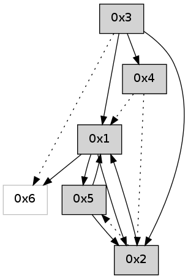

>> << IDX [start] -100 -25 -5 +0 +5 +25 +100 [420.410012007]
 Previous packets
415.006782 beacon02(adaf) #0 coord=01,02,05,03,04,06 cycle=432.0ms assoc 64 89 78
415.016781 beacon05(adaf) #0 coord=01,02,05,03,04,06 cycle=432.0ms assoc 64 2f 52
415.026784 beacon03(adaf) #0 coord=01,02,05,03,04,06 cycle=432.0ms assoc 64 b3 76
415.036784 beacon04(adaf) #0 coord=01,02,05,03,04,06 cycle=432.0ms assoc 64 15 5c
415.046783 beacon06(adaf) #0 coord=01,02,05,03,04,06 cycle=432.0ms assoc 64 61 40
415.058448 [Hello(5): seq=174 sym=2,1 sysInfo= stat=2:1,0,0,0/1:5,0,0,0]
----------------------------------------------------------------------
415.488929 beacon01(adaf) #0 coord=01,02,05,03,04,06 cycle=432.0ms assoc
-- color-indic=0 64 86 e6
415.498890 beacon02(adaf) #0 coord=01,02,05,03,04,06 cycle=432.0ms assoc 64 d7 19
415.508890 beacon05(adaf) #0 coord=01,02,05,03,04,06 cycle=432.0ms assoc 64 71 33
415.518890 beacon03(adaf) #0 coord=01,02,05,03,04,06 cycle=432.0ms assoc 64 ed 17
415.528890 beacon04(adaf) #0 coord=01,02,05,03,04,06 cycle=432.0ms assoc 64 4b 3d
415.538891 beacon06(adaf) #0 coord=01,02,05,03,04,06 cycle=432.0ms assoc 64 3f 21
415.550291 [Hello(1): seq=112 sym=5,6,2 sysInfo= stat=5:2,0,0,0/6:0,0,0,0/2:1,0,0,0]
----------------------------------------------------------------------
415.981037 beacon01(adaf) #0 coord=01,02,05,03,04,06 cycle=432.0ms assoc
-- color-indic=0 64 42 89
415.990999 beacon02(adaf) #0 coord=01,02,05,03,04,06 cycle=432.0ms assoc 64 13 76
416.000998 beacon05(adaf) #0 coord=01,02,05,03,04,06 cycle=432.0ms assoc 64 b5 5c
416.010997 beacon03(adaf) #0 coord=01,02,05,03,04,06 cycle=432.0ms assoc 64 29 78
416.020998 beacon04(adaf) #0 coord=01,02,05,03,04,06 cycle=432.0ms assoc 64 8f 52
416.030999 beacon06(adaf) #0 coord=01,02,05,03,04,06 cycle=432.0ms assoc 64 fb 4e
416.042644 [Hello(5): seq=175 sym=2,1 sysInfo= stat=2:2,0,0,0/1:6,0,0,0]
----------------------------------------------------------------------
416.473145 beacon01(adaf) #0 coord=01,02,05,03,04,06 cycle=432.0ms assoc
-- color-indic=0 64 0e 39
416.483106 beacon02(adaf) #0 coord=01,02,05,03,04,06 cycle=432.0ms assoc 64 5f c6
416.493108 beacon05(adaf) #0 coord=01,02,05,03,04,06 cycle=432.0ms assoc 64 f9 ec
416.503107 beacon03(adaf) #0 coord=01,02,05,03,04,06 cycle=432.0ms assoc 64 65 c8
416.513106 beacon04(adaf) #0 coord=01,02,05,03,04,06 cycle=432.0ms assoc 64 c3 e2
416.523107 beacon06(adaf) #0 coord=01,02,05,03,04,06 cycle=432.0ms assoc 64 b7 fe
416.538832 [Hello(1): seq=113 sym=5,6,2 sysInfo= stat=5:3,0,0,0/6:0,0,0,0/2:1,0,0,0]
----------------------------------------------------------------------
416.965253 beacon01(adaf) #0 coord=01,02,05,03,04,06 cycle=432.0ms assoc
-- color-indic=0 64 ca 56
416.975214 beacon02(adaf) #0 coord=01,02,05,03,04,06 cycle=432.0ms assoc 64 9b a9
416.985213 beacon05(adaf) #0 coord=01,02,05,03,04,06 cycle=432.0ms assoc 64 3d 83
416.995213 beacon03(adaf) #0 coord=01,02,05,03,04,06 cycle=432.0ms assoc 64 a1 a7
417.005215 beacon04(adaf) #0 coord=01,02,05,03,04,06 cycle=432.0ms assoc 64 07 8d
417.015215 beacon06(adaf) #0 coord=01,02,05,03,04,06 cycle=432.0ms assoc 64 73 91
417.026863 [Hello(5): seq=176 sym=2,1 sysInfo= stat=2:3,0,0,0/1:7,0,0,0]
----------------------------------------------------------------------
417.457361 beacon01(adaf) #0 coord=01,02,05,03,04,06 cycle=432.0ms assoc
-- color-indic=0 64 87 51
417.467322 beacon02(adaf) #0 coord=01,02,05,03,04,06 cycle=432.0ms assoc 64 d6 ae
417.477322 beacon05(adaf) #0 coord=01,02,05,03,04,06 cycle=432.0ms assoc 64 70 84
417.487322 beacon03(adaf) #0 coord=01,02,05,03,04,06 cycle=432.0ms assoc 64 ec a0
417.497323 beacon04(adaf) #0 coord=01,02,05,03,04,06 cycle=432.0ms assoc 64 4a 8a
417.507323 beacon06(adaf) #0 coord=01,02,05,03,04,06 cycle=432.0ms assoc 64 3e 96
417.521132 [Hello(1): seq=114 sym=5,6,2 sysInfo= stat=5:4,0,0,0/6:0,0,0,0/2:1,0,0,0]
----------------------------------------------------------------------
417.949468 beacon01(adaf) #0 coord=01,02,05,03,04,06 cycle=432.0ms assoc
-- color-indic=0 64 43 3e
417.959429 beacon02(adaf) #0 coord=01,02,05,03,04,06 cycle=432.0ms assoc 64 12 c1
417.969430 beacon05(adaf) #0 coord=01,02,05,03,04,06 cycle=432.0ms assoc 64 b4 eb
417.979431 beacon03(adaf) #0 coord=01,02,05,03,04,06 cycle=432.0ms assoc 64 28 cf
417.989431 beacon04(adaf) #0 coord=01,02,05,03,04,06 cycle=432.0ms assoc 64 8e e5
417.999431 beacon06(adaf) #0 coord=01,02,05,03,04,06 cycle=432.0ms assoc 64 fa f9
418.011081 [Hello(5): seq=177 sym=2,1 sysInfo= stat=2:4,0,0,0/1:8,0,0,0]
----------------------------------------------------------------------
418.441577 beacon01(adaf) #0 coord=01,02,05,03,04,06 cycle=432.0ms assoc
-- color-indic=0 64 0f 8e
418.451538 beacon02(adaf) #0 coord=01,02,05,03,04,06 cycle=432.0ms assoc 64 5e 71
418.461540 beacon05(adaf) #0 coord=01,02,05,03,04,06 cycle=432.0ms assoc 64 f8 5b
418.471537 beacon03(adaf) #0 coord=01,02,05,03,04,06 cycle=432.0ms assoc 64 64 7f
418.481540 beacon04(adaf) #0 coord=01,02,05,03,04,06 cycle=432.0ms assoc 64 c2 55
418.491540 beacon06(adaf) #0 coord=01,02,05,03,04,06 cycle=432.0ms assoc 64 b6 49
418.503195 [Hello(4): seq=216 asym=2,1 sysInfo= stat=2:0,0,0,0/1:3,0,0,0]
418.506296 [Hello(1): seq=115 sym=5,6,2 sysInfo= stat=5:5,0,0,0/6:0,0,0,0/2:1,0,0,0]
----------------------------------------------------------------------
418.933686 beacon01(adaf) #0 coord=01,02,05,03,04,06 cycle=432.0ms assoc
-- color-indic=0 64 cb e1
418.943647 beacon02(adaf) #0 coord=01,02,05,03,04,06 cycle=432.0ms assoc 64 9a 1e
418.953648 beacon05(adaf) #0 coord=01,02,05,03,04,06 cycle=432.0ms assoc 64 3c 34
418.963648 beacon03(adaf) #0 coord=01,02,05,03,04,06 cycle=432.0ms assoc 64 a0 10
418.973647 beacon04(adaf) #0 coord=01,02,05,03,04,06 cycle=432.0ms assoc 64 06 3a
418.983648 beacon06(adaf) #0 coord=01,02,05,03,04,06 cycle=432.0ms assoc 64 72 26
418.995294 [Hello(5): seq=178 sym=2,1 sysInfo= stat=2:5,0,0,0/1:9,0,0,0]
----------------------------------------------------------------------
419.425794 beacon01(adaf) #0 coord=01,02,05,03,04,06 cycle=432.0ms assoc
-- color-indic=0 64 b3 4c
419.435754 beacon02(adaf) #0 coord=01,02,05,03,04,06 cycle=432.0ms assoc 64 e2 b3
419.445755 beacon05(adaf) #0 coord=01,02,05,03,04,06 cycle=432.0ms assoc 64 44 99
419.455756 beacon03(adaf) #0 coord=01,02,05,03,04,06 cycle=432.0ms assoc 64 d8 bd
419.465756 beacon04(adaf) #0 coord=01,02,05,03,04,06 cycle=432.0ms assoc 64 7e 97
419.475756 beacon06(adaf) #0 coord=01,02,05,03,04,06 cycle=432.0ms assoc 64 0a 8b
419.489881 [Hello(1): seq=116 sym=5,6,2 sysInfo= stat=5:6,0,0,0/6:0,0,0,0/2:1,0,0,0]
----------------------------------------------------------------------
419.917904 beacon01(adaf) #0 coord=01,02,05,03,04,06 cycle=432.0ms assoc
-- color-indic=0 64 77 23
419.927866 beacon02(adaf) #0 coord=01,02,05,03,04,06 cycle=432.0ms assoc 64 26 dc
419.937865 beacon05(adaf) #0 coord=01,02,05,03,04,06 cycle=432.0ms assoc 64 80 f6
419.947866 beacon03(adaf) #0 coord=01,02,05,03,04,06 cycle=432.0ms assoc 64 1c d2
419.957866 beacon04(adaf) #0 coord=01,02,05,03,04,06 cycle=432.0ms assoc 64 ba f8
419.967866 beacon06(adaf) #0 coord=01,02,05,03,04,06 cycle=432.0ms assoc 64 ce e4
419.979506 [Hello(5): seq=179 sym=2,1 sysInfo= stat=2:6,0,0,0/1:10,0,0,0]